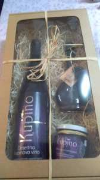

Kupinovo vino Don Kupino
Vino od kupina iz ekološkog nasada na plantaži obitelji Jaić Krasnik i glavni proizvod gospodarstva.
Ekološki nasadVlastite kupine
Sve što obitelj proizvodi nastaje iz vlastitih nasada: kupinovo vino, džem i sokovi od kupina iz ekološkog uzgoja te bijela i crna vina iz vinograda na Močvarki.
Prioritetni proizvodi gospodarstva su kupinovo vino i pekmez od kupina. Kupine se njeguju u ekološkom uzgoju na obiteljskoj plantaži.
Vino od kupina iz ekološkog nasada na plantaži obitelji Jaić Krasnik i glavni proizvod gospodarstva.

Džem od pasiranih kupina s iste plantaže, pod istim imenom kao i kupinovo vino.

Kupinovo vino i džem Don Kupino složeni u poklon kutiju. Uz to obitelj radi i prirodne domaće sokove. Za dostupnost i dostavu javite se telefonom ili e-poštom.
Obitelj sama uzgaja grožđe i od njega radi vino, od vinograda do stola. Kušati se mogu u izletištu Pri Braceku.

Bijelo vino iz vinograda u Manjoj Vasi
Bijelo vino
Crno vino
Bijelo vino
Kupine iz ekološkog uzgoja i grožđe s Močvarke u Manjoj Vasi.
Vino, kupinovo vino, džem i sokovi iz vlastitih nasada.
U izletištu Pri Braceku, uz tradicionalna jela samoborskog kraja.
Moguća je i dostava, uz dogovor s obitelji.
U izletištu Pri Braceku, Cerje Samoborsko 91 I. Ondje se uz vina i sokove poslužuju i tradicionalna jela samoborskog kraja.
Prema podacima Turističke zajednice grada Samobora od ponedjeljka do petka od 15 do 20 sati, a subotom i nedjeljom od 11 do 20 sati. Prije dolaska je najbolje nazvati 091 511 6650.
Da, dostava je moguća. Količinu, mjesto i način dostave dogovorite izravno s obitelji telefonom ili e-poštom.
S plantaže obiteljskog gospodarstva u Manjoj Vasi, gdje se kupine njeguju u ekološkom uzgoju.
Da, kupinovo vino Don Kupino i džem slažu se u poklon kutiju. Javite se za dostupnost.
Da, OPG Jaić Krasnik dio je Samoborske vinske ceste.
Cerje Samoborsko 91 I · pon – pet 15 – 20 h · sub – ned 11 – 20 h